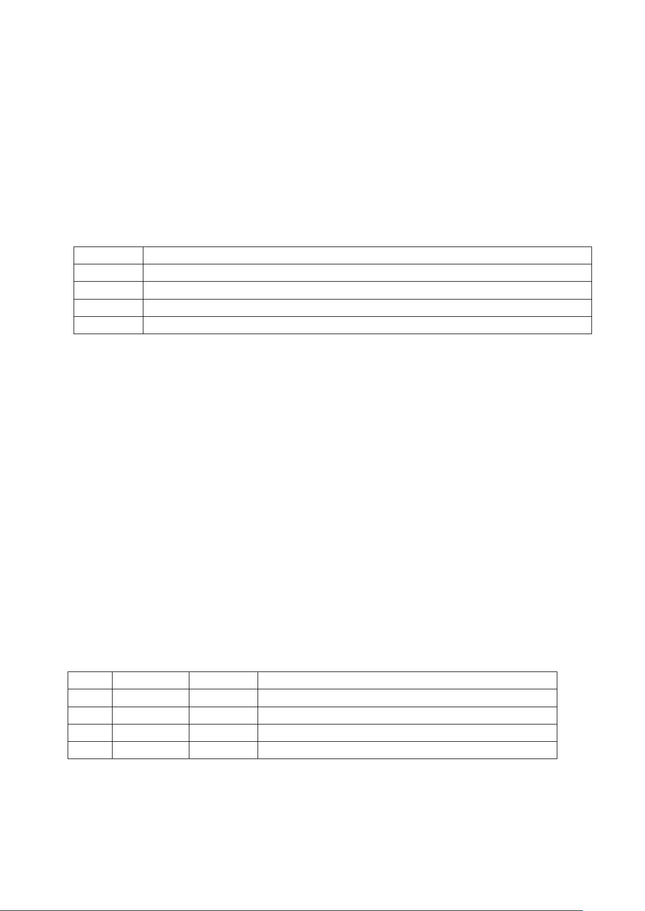

MC 科学试题 第 2 页 (共 6 页)
6.主务农耕，兼营畜牧，天下之本。下列关于我的世界农牧业发展的说法，错误的是
A.加快随机刻速度和施加骨粉均可提高农作物生产效率
B.村民中的农民会收割和播种作物，将小麦制作成面包
C.牛的繁殖需要小麦，马的驯服使用金胡萝卜效果较好
D.兔子皮可酿造治疗药水，铁桶可从哞菇上获取蘑菇煲
7.战墙是备受欢迎的多人游戏模式之一。游戏开始时，64 名玩家将被平均分配至四支队伍中。
每支队伍均拥有一只最大血量为 1000 的凋零作为核心守护目标。当一支队伍的凋零被击败
后，该队玩家将无法复活。在激烈的团队对抗中，最后一支幸存队伍将获得胜利。玩家可选
择不同能力与定位的职业。下表职业应主要承担生产建设任务的是
获得效率Ⅱ铁镐、熔炉及煤炭，挖掘矿物有几率翻倍，将原矿变成块
治疗队友 1 颗心，你会扣 0.5 颗心。随时间推移，你的血量额外增加 5 颗心
瞄准 6 格范围内的敌人，将其麻醉，同时你也无法动弹
使用技能使周围 5 格敌人燃烧 10 秒，且你的攻击有几率使敌人燃烧
A.矿工 B.医生 C.麻醉师 D.火焰法师
“根号河之诗”是国内玩家 mineconan 制作的一款下界生存地图。该地图的主世界采用了
下界生物群系，并包含许多作者自定义的生物。地图面积广阔，主体为超平坦世界，设有根河
村、主世界生态圈、地狱要塞等以地狱为主题精心设计的建筑。史蒂夫计划在该地图上安装小
地图模组（小地图模组与该地图无冲突），并通过局域网与同学联机。请完成 8～9 题。
8.下列关于根号河之诗地图及小地图模组的说法，错误的是
A.推测建造根河村时使用的建筑方块为石英块、岩浆块等方块
B.该地图末影之眼材质与原版不同，原因为该地图内置资源包
C.将小地图模组文件放入 saves 文件夹中可使该模组正常运行
D.小地图模组利于观察超平坦广阔的地形，寻找地图中的建筑
9.史蒂夫开放局域网的过程依次是
①选择“对其他玩家的设置”，点击“创建局域网世界”
②进入一个新的世界，按 ESC 键
③点击“对局域网开放”
④局域网开放成功
A.①②③④ B.②①③④ C.③②①④ D.②③①④
10.魔咒的加成主要通过附魔系统实现。下列魔咒各项特征对应正确的是
11.在怪物农场的建设中，常用的聚怪方式主要有三种：①利用液体流动、②锁定特定生物或
物品寻路、③利用红石机械，如活塞推动。利用②方式常被目标怪物锁定的生物是
A.悦灵 B.史莱姆 C.铁傀儡 D.僵尸猪灵